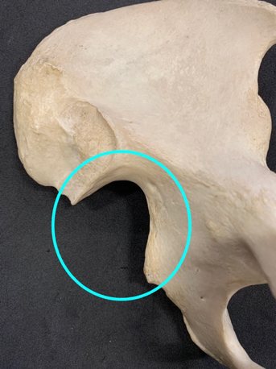
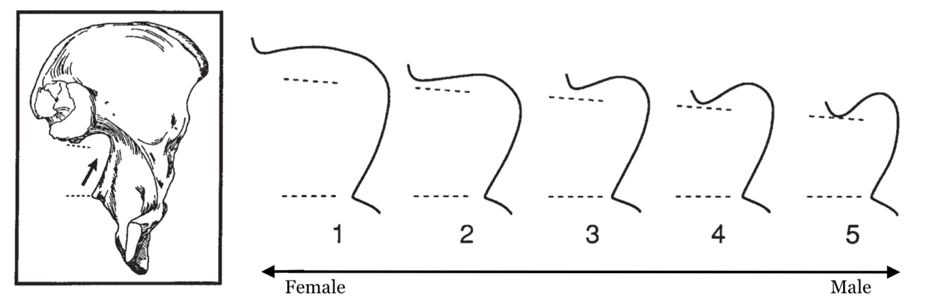

The police have asked you to help to identify the sex of an individual to help their investigation. Please use the reference diagrams in Figure 2 to estimate the sex of the individual in Figure 1 using the greater sciatic notch. Please provide the number you believe the greater sciatic notch best resembles as well as a sex estimate of either ‘male’, ‘female’ or ‘undetermined’.
The police have contacted you as they have received information that a woman went missing 5 years ago in the area that the remains were found. They want to know if you think the os coxae in Figure 1 could have belonged to the woman they are describing. With this information in mind, please provide the number you believe the greater sciatic notch best resembles as well as a sex estimate of either ‘male’, ‘female’ or ‘undetermined’.
Taking into consideration the estimates that you gave in both stage 1 and stage 2, please provide a concluding sex estimate of ‘male’, ‘female’ or ‘undetermined’.
The police have asked you to help to identify the sex of an individual to help their investigation. They have received information that a woman went missing 5 years ago in the area that the remains were found. They want to know if you think the os coxae in Figure 1 could have belonged to the woman they are describing. With this information in mind, please provide the number you believe the greater sciatic notch best resembles as well as a sex estimate of either ‘male’, ‘female’ or ‘undetermined’.
Without considering the woman who went missing in the area in your estimation, please use the reference diagrams in Figure 1 to estimate the sex of the individual in Figure 2 using the greater sciatic notch. Please provide the number you believe the greater sciatic notch best resembles as well as a sex estimate of either ‘male’, ‘female’ or ‘undetermined’.
Taking into consideration the estimates that you gave in both stage 1 and stage 2, please provide a concluding sex estimate of ‘male’, ‘female’ or ‘undetermined’.

Figure 1: Os coxae with greater sciatic notch circled, which can be used to provide a sex estimate.

Figure 2: Scoring system of the greater sciatic notch from Walker (2005).